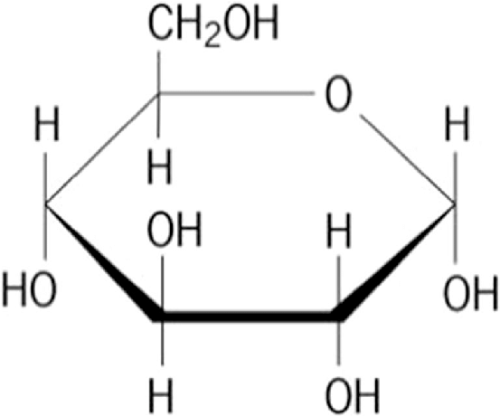
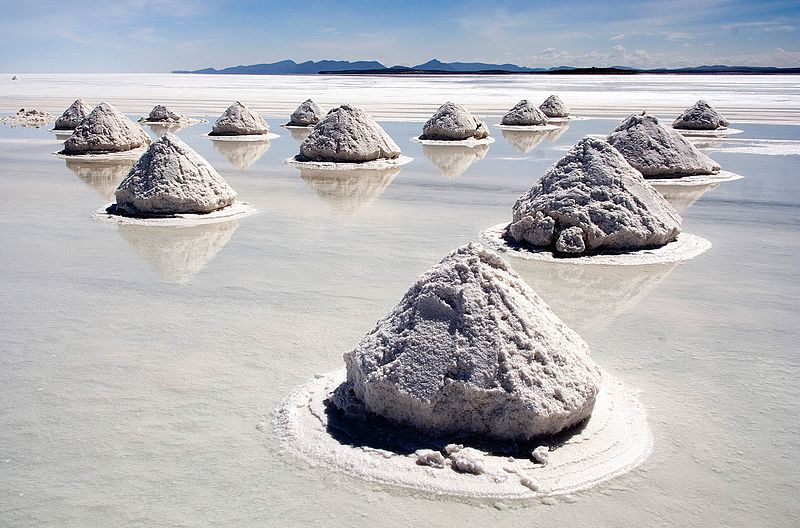

Animals, specifically humans, have five different types of tastes: sweet, sour, salty, bitter, and umami. As animals
have evolved, the tastes that provide the most energy (sugar and fats) are the most pleasant to eat while others, such
as bitter, are not enjoyable.Water, while important for survival, has no taste. Fats, on the other hand,
especially saturated fats, are thicker and rich and are thus considered more enjoyable to eat.
-

Sweet
Generally regarded as the most pleasant taste, sweetness is almost always caused by a type of simple sugar such as
glucose or fructose, or disaccharides such as sucrose, a molecule combining glucose and fructose. Complex carbohydrates
are long chains and thus do not have the sweet taste. Artificial sweeteners such as sucralose are used to mimic the
sugar molecule, creating the sensation of sweet, without the calories. Other types of sugar include raw sugar, which
is known for its amber color, as it is unprocessed. As sugar is vital for energy and survival, the taste of sugar is
pleasant.
The stevia plant contains a compound known as steviol which, when extracted, has 300 times the sweetness of sugar
while having minimal impact on blood sugar.
-
Sour
Sourness is caused by the taste of acids, such as vinegar in alcoholic beverages. Sour foods include citrus, specifically
lemons, limes, and to a lesser degree oranges. Sour is evolutionarily significant as it is a sign for a food that may
have gone rancid due to bacteria.Many foods, however, are slightly acidic, and help stimulate the taste buds and
enhance flavor.
-

Salty
Saltiness is the taste of alkali metal ions such as sodium and potassium. It is found in almost every food in low to
moderate proportions to enhance flavor, although to eat pure salt is regarded as highly unpleasant. There are many
different types of salt, with each having a different degree of saltiness, including sea salt, fleur de sel, kosher
salt, mined salt, and grey salt. Other than enhancing flavor, its significance is that the body needs and maintains a
delicate electrolyte balance, which is the kidney's function. Salt may be iodized, meaning iodine has been added to
it, a necessary nutrient that promotes thyroid function. Some canned foods, notably soups or packaged broths, tend to
be high in salt as a means of preserving the food longer. Historically salt has long been used as a meat preservative
as salt promotes water excretion. Similarly, dried foods also promote food safety.
-
Bitter
Bitterness is a sensation often considered unpleasant characterized by having a sharp, pungent taste. Unsweetened
dark chocolate, caffeine, lemon rind, and some types of fruit are known to be bitter.
-
Umami
Umami, the Japanese word for delicious, is the least known in Western popular culture but has a long tradition in
Asian cuisine. Umami is the taste of glutamates, especially monosodium glutamate (MSG).It is characterized as
savory, meaty, and rich in flavor. Salmon and mushrooms are foods high in umami.